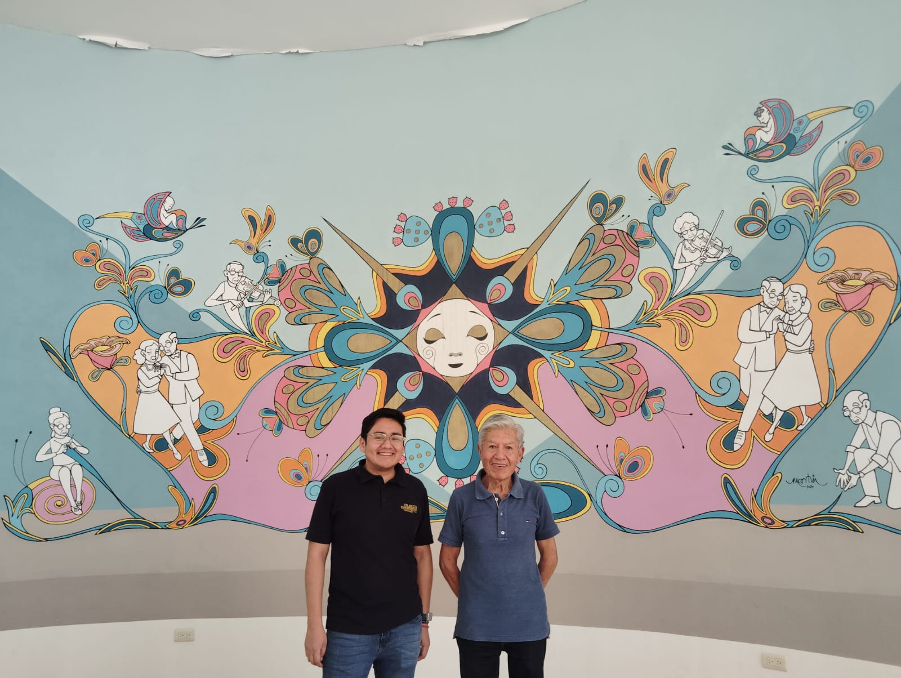
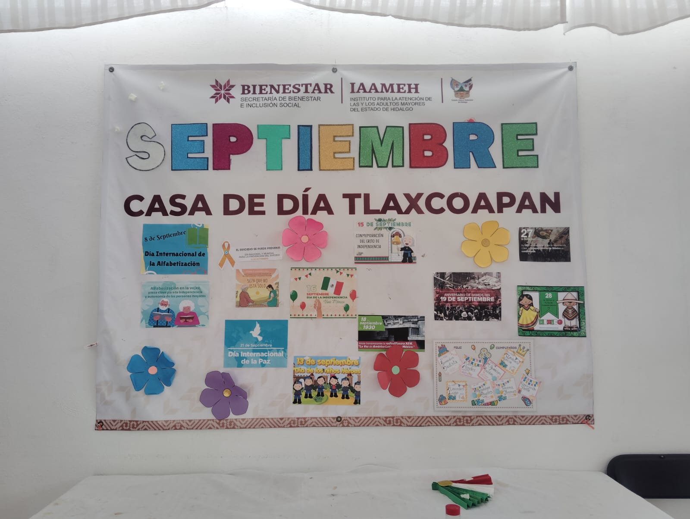
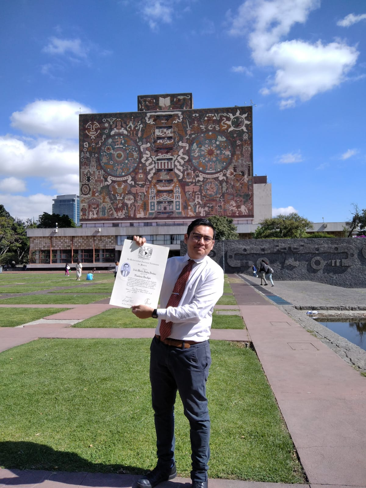
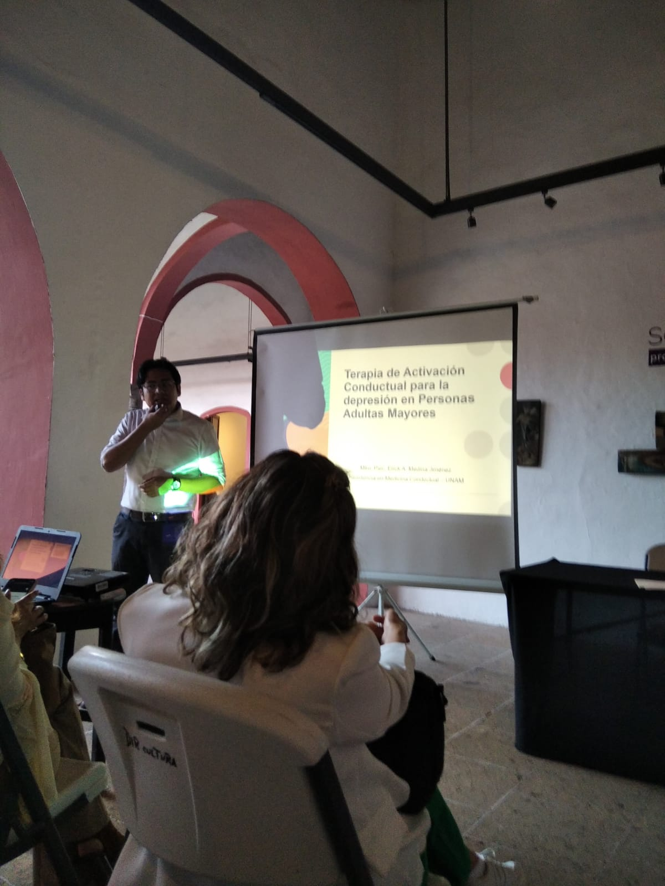
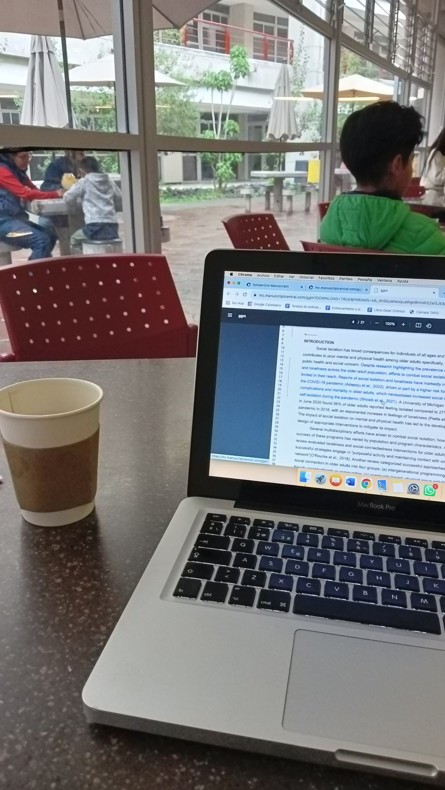

Hola, soy
Erick Medina
Psicólogo Clínico, Académico e Investigador
Doctorando en Psicología por la UNAM especializado en investigación, docencia y atención clínica. Mi pasión se centra en la salud mental, la psicogerontología, la terapia cognitivo-conductual y el análisis integral de datos de intervenciones conductuales.
Sobre Mí
Experiencia y Trayectoria
Desarrollo de Software en Salud
2026Registro de Derechos de Autor (INDAUTOR)
Trabajé junto a un excelente equipo en el diseño y registro oficial de una aplicación tecnológica creada para facilitar la evaluación y el cuidado de la salud.
Investigador Titular (Grant)
Ago. 2025 - Ene. 2026Dirección General de Políticas de Investigación en Salud
Financiamiento del proyecto de investigación aplicada para abordar prioridades del sistema de salud. Con sede en el Instituto Nacional de Ciencias Médicas y Nutrición Salvador Zubirán (INCMNSZ).
Revisor por Pares (Peer Reviewer)
Non-editorial journal rolesRevistas Científicas Internacionales
Evaluación y revisión por pares para las revistas Gerontology and Geriatric Medicine, MethodsX y Frontiers in Psychiatry.
Juez Experto y Revisor Académico
2025 - 2026Instituto Tecnológico de Sonora (ITSON)
Apoyo en la validación de escalas de medición para proyectos de salud mental en adultos mayores y en la retroalimentación de algunas tesis de posgrado.
Co-investigador
2025 - ActualidadInstituto Nacional de Ciencias Médicas y Nutrición Salvador Zubirán (INCMNSZ)
Colaboro con entusiasmo en un programa de entrenamiento remoto para cuidadores, aprendiendo sobre la implementación de tratamientos a medida.
Docente e Instructor
2020 - ActualidadITECOC, ONU Mujeres, CAPASI A.C.
He tenido el privilegio de impartir y ayudar en talleres sobre "Intervención en el Adulto Mayor", estrategias de autocuidado, Activación Conductual y apoyo emocional, aprendiendo muchísimo de cada estudiante.
Ayudante de Investigación
2022UNAM (FES Iztacala) | Proyecto FORDECYT-PRONACES
Colaboré creando materiales para intervenciones a través de telepsicología, observando de cerca cómo la tecnología puede acercarnos a quienes lo necesitan.
Residente en Medicina Conductual
2019 - 2020Hospital Juárez de México (HJM), Servicio de Geriatría
Atendí directamente a acompañar a más de 180 pacientes. Fue un año de profundo aprendizaje humano y médico trabajando de la mano con las familias, cuidadores y grandes especialistas del servicio.
Avances Científicos
Selecciona cualquiera de mis investigaciones para leer un resumen interactivo en términos sencillos y acceder al PDF original de la publicación.
Envejecimiento activo: conceptualización y modelos teóricos
VERTIENTES Revista Especializada en Ciencias de la Salud, 2018
Factores psicosociales asociados a la fragilidad
J Lat Am Geriat Med. (INCMNSZ), 2025
Aplicación de Evaluación Clínica
Registro de Derechos de Autor, 2026
¿Cómo tratar la depresión en adultos mayores?
Gerontology & Geriatric Medicine, 2024
Medición del miedo a caerse en personas mayores
Gerontology & Geriatric Medicine, 2023
La calidad de vida en el día a día
Psicología y Salud, 2022
Ansiedad en la vejez: ¿Qué factores la disparan?
Geriatrics, 2025
Resiliencia y estrés en mujeres ante la pandemia
Int. Journal of Community Medicine and Public Health, 2022
Conocimiento, afrontamiento y niveles de estrés
Interacciones, 2022
Galería Profesional
Algunas fotografías de mi trabajo en congresos, conferencias, talleres y colaboraciones.





